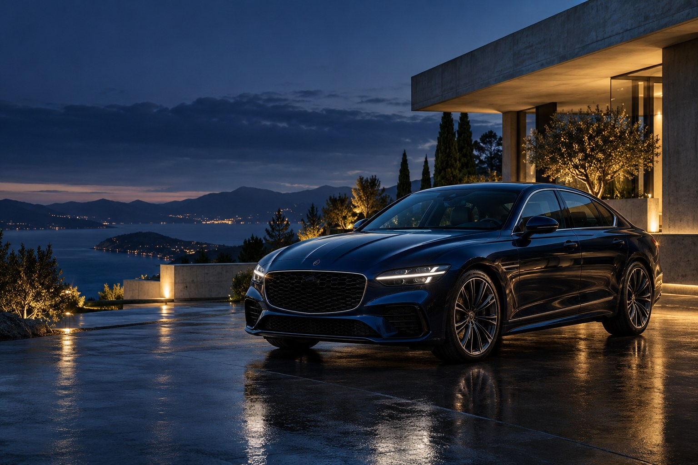

ОБУЧЕНИЕ ВОЖДЕНИЮ В МОСКВЕ
Спокойствие.
Уверенность.
Свобода.
Искусство вождения начинается с уверенности.
А уверенность — с внимания к вам.
За рулём — вы.
В центре внимания — тоже.
Первый выезд в город. Возвращение после паузы. Желание чувствовать автомобиль тоньше. У каждого свой путь к уверенности.
Мы начинаем с вас: вашего опыта, целей и вопросов. Чтобы обучение стало понятным движением вперёд — без суеты и лишнего напряжения.
02 — НАПРАВЛЕНИЯ ОБУЧЕНИЯ
У каждого пути
своя отправная точка.
Выберите то, что близко вам.
Начнём с вашего опыта.
01ПЕРВОЕ ЗНАКОМСТВООбучение с нуля
Когда всё ещё впереди. От понимания правил и первых манёвров — к самостоятельным решениям на дороге.
Обучение с нуля
Начинаем с основ: знакомство с автомобилем, правила дорожного движения и последовательная практика. Двигаемся от простого к сложному, уделяя внимание тому, что пока вызывает вопросы.
02ВОЗВРАЩЕНИЕ ЗА РУЛЬВосстановление навыков
Права уже есть, а уверенности пока не хватает. Вернитесь к вождению в комфортном для вас темпе.
Восстановление навыков
Разбираем ситуации, в которых вы чувствуете себя неуверенно: парковку, перестроения, перекрёстки или движение в плотном потоке. Практика строится вокруг ваших задач.
03ВАША ЛИЧНАЯ ПРАКТИКАПерсональный инструктор
Внимание к вашим целям. От уверенной парковки до привычных маршрутов по Москве.
Персональный инструктор
В центре занятия — ваш запрос. Обсуждаем опыт, определяем, какие навыки стоит развить, и работаем над ними последовательно, с обратной связью после каждого этапа.
Нажмите на направление, чтобы узнать больше

03 — ВАШ ОПЫТ
Ваш инструктор.
Ваш темп.
Ваш результат.
Хорошее обучение начинается с диалога. Из ваших вопросов и пожеланий складывается следующий шаг.
- 01
Сначала — знакомство
Обсуждаем ваш опыт, цели и то, что пока вызывает неуверенность.
- 02
Затем — ваш маршрут
Определяем направление обучения и задачи для практики.
- 03
Шаг за шагом — к уверенности
Разбираем манёвры и дорожные ситуации. Спокойно, последовательно, с вниманием к деталям.
В ДВИЖЕНИИ
Всё начинается
с движения.
От первых манёвров
к уверенности на дороге.
Загрузка эффекта…
04 — НОВЫЙ УРОВЕНЬ СВОБОДЫ
Город становится ближе,
когда вы за рулём.
Ганг Люкс. Искусство уверенного вождения.
Открыть программы